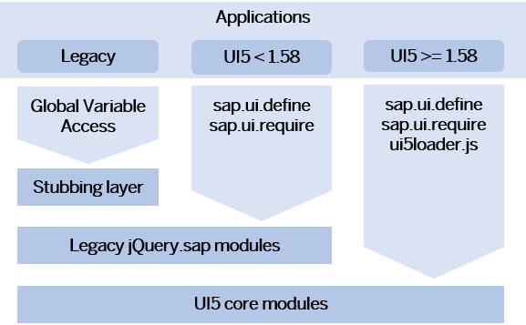

Adapting to the Modularization of the Core
Small, predefined modules for specific purposes, providing standalone functionality can be used any time OpenUI5 is loaded.
The modules are either Browser-dependent (sap/ui/core) and use the DOM or any other Browser-native API, or not Browser-dependent (sap/base) and could run in node.js without DOM access. Note that node.js is not an officially supported environment.
Compatibility With Existing Modules
The modules are introduced with OpenUI5 version 1.58 and replace the existing larger core modules to make the code easier to understand and maintain, and to decrease the initial payload of OpenUI5. To avoid that the removal of dependencies caused by the switch to the new modules causes exceptions, a lazy loading of the legacy modules is provided. For compatibility reasons, this lazy loading is done synchronously and it provides just the API namespace without loading the actual implementation.
As it may not be obvious where those calls occur or where a dependency is missing, a rule in the Support Assistant reports the use and provides guidance on how to avoid them. A second rule with lower priority reports the use of an jQuery.sap API in general. There are also log warnings in the console of the browser's development tools, including a stack trace which makes it easy to locate the call in your coding.
Migration
To benefit from the improvements provided by the modules, perform the following steps:
-
Always declare the full dependencies as described in Loading a Module.
-
Migrate to the new module API as described in Legacy jQuery.sap Replacement. Do not use the global jQuery.sap API anymore.
-
Do not use the global sap.ui factory functions. Instead, use their replacements, see Legacy Factories Replacement.